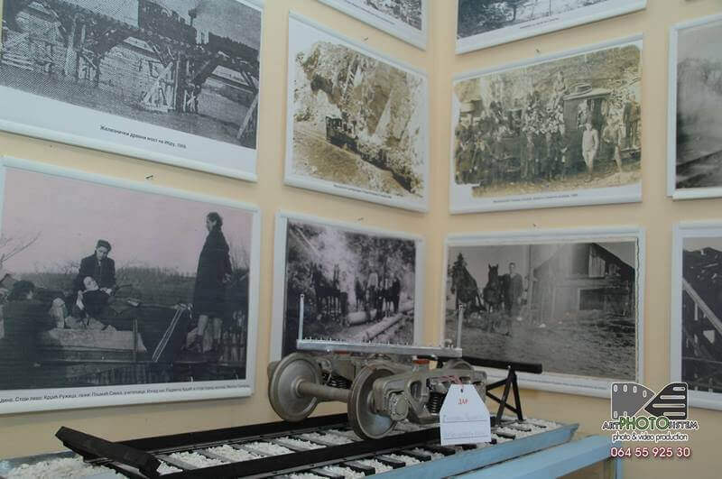

— чувари сећања и покретачи обнове пруге уског колосека на релацији која је обележила почетак индустријализације Краљева, развој инфрaструктуре и дрвне индустрије Гоча, борбе и трагедије у вихору светских ратова . . .
др Милан Матијевић — Гочка пруга, 2015.
Група ентузијаста љубитеља старих пруга, на челу са Живомиром Милашиновићем и др Миланом Матијевићем у крилу Завичајног друштва "Краљево" покренула је идеју за ревитализацију Гочке пруге. 8. априла 2008. године формиран је Иницијативни одбор за ревитализацију Гочке пруге, а 2012. године регистровано је Удружење "Гочка пруга". Снимљен је један популарни документарни филм о Гочкој прузи и отворен је изложбени простор у новој згради Месне заједнице Каменица, на коме месту се раније налазила железничка станица Каменица.

Око покренуте иницијативе окупио се већи број чланова Завичајног друштва "Краљево", радника са железнице, инжињера из области вагоноградње и грађана Краљева и села испод планине Гоч. Покренута иницијатива изазвала је и пажњу љубитеља старих пруга из Србије.
У Каменици, у новој згради Месне заједнице, уређена је спомен соба са бројним фотографијама, експонатима, алатима и уређајима који су коришћени на Гочкој прузи. У спомен соби је изложено преко 90 слика, оригиналних и копија, а изложен је и један број оригиналног алата и инвентара који су коришћени на Гочкој прузи. Изложбена поставка је отворена за појединачне и групне посете, за екскурзије и стручне посете.
Удружење "Гочка пруга" верује да би ревитализација Гочке пруге био један нови импулс у коришћењу природних ресурса планине Гоч и коришћењу туристичких ресурса Врњачке Бање, Краљева i Матарушке Бање, као и бројних планинских локалитета који красе овај део Југозападне Србије.